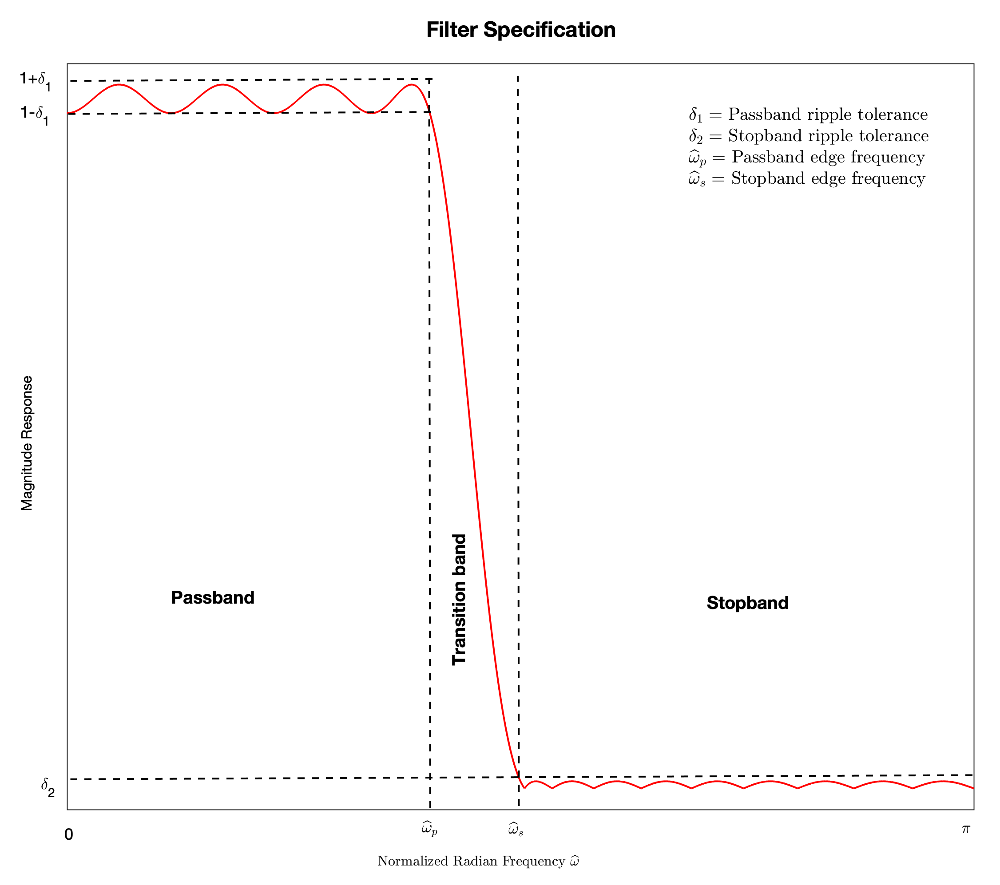

6.6. FIR Filter Design#
We discuss two common approaches to design FIR filters that approximate the frequency responses of the ideal filters. We focus on the design of lowpass filter. The design approaches extend almost trivially to other types of filters. One may also use the frequency transformation methods in Section 6.5.4 to convert the lowpass filter to other types of filters.
6.6.1. Filter Specifications#
The first step in the filter design process is to specify in what way we are to approximate the frequency response of an ideal lowpass filter.
In the following discussion, we consider the specification of the magnitude response shown in the figure below:
This specification is quantified by the quadruple \((\hat\omega_p, \hat\omega_s, \delta_1, \delta_2)\).
For the phase response, we impose the restriction that the group delay of the filter must be a constant. That is, the filter must be a generalized linear-phase FIR filter.
{kind=link}
6.6.2. Design by Windowing#
Design Procedure:
Pick a window \(w[n]\) of length \(L=M+1\) from the table in Section 4.2.
Let \(H_d(e^{j\hat\omega})\) be the desired frequency response. e.g., that of an ideal lowpass filter. Take the inverse DTFT of \(H_d(e^{j\hat\omega})\) to obtain the desired impulse response \(h_d[n]\). Time-shift \(h_d[n]\), if necessary, to make \(h_d[n]\) symmetric (antisymmetric), i.e., \(h_d[M-n] = h_d[n]\) (\(h_d[M-n] = -h_d[n]\)) for \(n=0,1,\ldots,M\).
Apply the window to \(h_d[n]\) to generate the FIR impulse response \(h[n] = w[n] h_d[n]\) of order \(M\).
Calculate the magnitude response \(|H(e^{j\hat\omega})|\) of \(h[n]\) to check whether the specification \((\hat\omega_p, \hat\omega_s, \delta_1, \delta_2)\) is met.
If yes, terminate and output \(h[n]\).
If no, increment \(M\) and/or change other window parameters and go back to step 2.
Note that every window \(w[n]\) listed in the table in Section 4.2 is symmetric. As a result, if \(h_d[n]\) is symmetric (antisymmetric), then \(h[n]\) will be symmetric (antisymmetric). That is, the filter \(h[n]\) obtained will be a generalized linear-phase FIR filter. For lowpass filter design, we want \(h[n]\) to be symmetric (types 1 & 2).
By the multiplication property of DTFT,
\[\begin{equation*} H(e^{j\hat\omega}) = \frac{1}{2\pi} \int_{-\pi}^{\pi} H_d(e^{j\theta}) W(e^{j(\hat\omega - \theta)}) \, d\theta. \end{equation*}\]Pictorially, the DTFT \(W(e^{j\hat\omega})\) of the window \(w[n]\) smooths out any abrupt transitions in \(H_d(e^{j\hat\omega})\) and causes ripples in the passband and stopband. These effects become less prominent as the window length \(L\) (order \(M\)) increases. The choice between different windows often amounts to a tradeoff between a wider transition band and smaller \(\delta_1\) and \(\delta_2\).
For the Kaiser window, extensive numerical studies have been performed to obtain empirical formulas for good choices of \(M\) and \(\beta\) in order to satisfy the design specification \((\hat\omega_p, \hat\omega_p + \Delta\hat\omega, \delta, \delta)\) (see [OS10] Chapter 7 for details):
(6.10)#\[\begin{split}\begin{align} \beta &= \begin{cases} 0.1102 (D - 8.7) & \text{if } D>50 \\ 0.5842(D-21)^{0.4} + 0.07886 (D-21) & \text{if } 21 \leq D \leq 50 \\ 0 & \text{if } D < 21 \end{cases} \\ M &= \frac{D-7.95}{2.285 \Delta\hat\omega} \end{align}\end{split}\]where \(D = -20\log_{10} \delta\). As a result, one may use (6.10) as an initial choice for step 1 in the design procedure above.
MATLAB Example 1:
The objective is to design a lowpass generalized linear-phase FIR filter with the specification \((0.3\pi, 0.35\pi, 0.01, 0.001)\). We use the Kaiser window and (6.10) to select \(M\) and \(\beta\). One may use the MATLAB function
kaiserordto calculate the choices of \(M\) and \(\beta\) given by (6.10):>> [M, wc, beta, ftype] = kaiserord([0.3, 0.35], [1, 0], [0.01, 0.001]) M = 146 wc = 0.3250 beta = 5.6533 ftype = 'low'
Tip
The empirical formula (6.10) assumes \(\delta_1=\delta_2=\delta\). If the input tolerance vector to
kaiserordhas elements of different values, such as in Example 1 above, the minimum value is taken as \(\delta\).The estimated order is \(M=146\) (a type-1 filter). Set the desired frequency response to be that of an ideal lowpass filter, i.e., \(H_d(e^{j\hat\omega}) = \begin{cases} e^{-j\hat\omega \frac{M}{2}} & \text{if } |\hat\omega| \leq 0.325\pi \\ 0 & \text{if } 0.325\pi < |\hat\omega| \leq \pi. \end{cases}\) Taking inverse DTFT gives \(\displaystyle h_d[n] = \frac{\sin(0.325\pi (n- \frac{M}{2}))}{\pi (n-\frac{M}{2})}\), which is clearly symmetric. Next, we apply the Kaiser window to obtain the target type-1 or -2 filter \(h[n]\):
>> n = [0:M]; >> hd = sin(0.325*pi*(n-M/2)) ./ (n-M/2) / pi; >> hd(M/2+1) = 0.325; %Need this only when M is even >> h1 = kaiser(M+1, beta).' .* hd; >> fvtool(h1, 1);
It turns out that the specification of \(\delta_2 = 0.001\) (-\(60\) dB) is slightly violated in the stopband for this order. The achieved value is \(\delta_2 = 0.001053\) (\(-59.55\) dB). This is often acceptable in practice. The specification of \(\delta_1 = 0.01\) in the passband is well satisfied due to the more stringent value of \(\delta=0.001\) is employed by
kaiserordto estimate the order \(M\). One may also increment \(M\) to \(150\) (a type-1 filter) to satisfy the specification of \(\delta_2 = 0.001\).Caution
Increasing the order \(M\) while keeping the value of \(\beta\) unchanged may not monotonically reduce the ripples in the passband and stopband. For example, setting \(M=150\) meets the specification of \(\delta_2=0.001\) in the stopband, but slightly increase the maximum ripple value in the passband!
One may also use the MATLAB function
fir1to generate the desired impulse response by a least square optimization (instead of using the ideal lowpass filter formula) and then apply the Kaiser window:>> h1f = fir1(M, wc, ftype, kaiser(M+1, beta)); >> fvtool(h1f, 1)
The filter given by
fir1is very similar to the one obtained above using the ideal lowpass filter formula to generate the desired impulse response \(h_d[n]\). The specification of \(\delta_2 = 0.001\) is again slightly violated in both the stopband. Increasing \(M\) to\(150\) again meets the specification.MATLAB Example 2:
One may employ the frequency transformations described in Section 6.5.4 to obtain other types of filters from the lowpass filter obtained in Example 1 above. For instance, setting \(\hat h[n] = (-1)^n h[n]\) will give us a highpass, generalized linear-phase FIR filter with stopband \([0, 0.65\pi]\) and passband \([0.7\pi, \pi]\).
However, it is more convenient to use the MATLAB function
fir1again to design a highpass generalized linear-phase FIR filter:>> [M, wc, beta, ftype] = kaiserord([0.65, 0.7], [0, 1], [0.001, 0.01]) >> h2 = fir1(M, wc, ftype, kaiser(M+1, beta)); >> fvtool(h2, 1);
MATLAB Example 3:
To design a bandpass generalized linear-phase FIR filter with passband \([0.3\pi, 0.65\pi]\) and stopband \([0,0.25\pi] \cup [0.7\pi, \pi]\), we can similarly use
fir1:>> [M, wc, beta, ftype] = kaiserord([0.25, 0.3, 0.65, 0.7], [0, 1, 0], [0.001, 0.01, 0.001]) >> h3 = fir1(M, wc, ftype, kaiser(M+1, beta)); >> fvtool(h3, 1);
6.6.3. Equiripple Design - Parks-McClellan Algorithm#
The Parks-McClellan algorithm is a more systematic procedure to generate a generalized linear-phase FIR filter of order \(M\) that satisfies the specification \((\hat\omega_p, \hat\omega_s, \delta_1, \delta_2)\).
To explain the algorithm, first note that the real-valued component \(A(e^{j\hat\omega})\) in the frequency response of any of the four types of generalized linear-phase FIR filters described in Section 6.5.3 can be expressed in the following form:
\[\begin{equation*} A(e^{j\hat\omega}) = Q(e^{j\hat\omega}) P(e^{j\hat\omega}) \end{equation*}\]where
\[\begin{equation*} Q(e^{j\hat\omega}) = \begin{cases} 1 & \text{ Type 1: } \text{even } M, \text{symmetric } h[n]\\ \cos \frac{\hat\omega}{2} & \text{ Type 2: } \text{odd } M, \text{symmetric } h[n] \\ \sin \hat\omega & \text{ Type 3: } \text{even } M, \text{antisymmetric } h[n] \\ \sin \frac{\hat\omega}{2} & \text{ Type 4: } \text{odd } M, \text{antisymmetric } h[n] \end{cases} \end{equation*}\]and
\[\begin{equation*} P(e^{j\hat\omega}) = \sum_{k=0}^{N} \alpha_k \cos(\hat\omega k) \end{equation*}\]with
\[\begin{equation*} N = \begin{cases} \frac{M}{2} & \text{ Type 1} \\ \frac{M-1}{2} & \text{ Types 2 & 4} \\ \frac{M}{2} - 1 & \text{ Type 3} \end{cases} \end{equation*}\]and the coefficients \(\{\alpha_k\}_{k=0}^{N}\) are functions of \(h[n]\) depending on the type of the generalized linear-phase FIR filter (see [PM22] \(\S\)10.2.4 for details).
For the case of designing a lowpass filter, the specification \((\hat\omega_p, \hat\omega_s, \delta_1, \delta_2)\) translates to:
(6.11)#\[\begin{split}\begin{align} 1 - \delta_1 &\leq A(e^{j\hat\omega}) \leq 1 + \delta_1 & \text{for } |\hat\omega| \leq \hat\omega_p \\ - \delta_2 &\leq A(e^{j\hat\omega}) \leq \delta_2 & \text{for } \hat\omega_s < |\hat\omega| \leq \pi. \end{align}\end{split}\]The filter design problem can then be formulated as choosing \(A(e^{j\hat\omega})\) that satisfies the specification in (6.11) to best approximate the desired \(\displaystyle A_d(e^{j\hat\omega}) = \begin{cases} 1 & \text{for } |\hat\omega| \leq \hat\omega_p \\ 0 & \text{for } \hat\omega_s < |\hat\omega| \leq \pi . \end{cases}\)
Note that both \(A_d(e^{j\hat\omega})\) and \(P(e^{j\hat\omega})\) are even functions of \(\hat\omega\), and \(Q(e^{j\hat\omega})\) is either even or odd in \(\hat\omega\), it suffices to consider the design over the frequency range \(S = [0, \hat\omega_p] \cup [\hat\omega_s, \pi]\), i.e., the positive-frequency passband and stopband.
Consider the weighted approximation error
\[\begin{align*} E(e^{j\hat\omega}) &= W(e^{j\hat\omega}) \left[ A_d(e^{j\hat\omega}) - A(e^{j\hat\omega}) \right] \\ &= \underbrace{W(e^{j\hat\omega}) Q(e^{j\hat\omega})}_{\tilde{W} (e^{j\hat\omega})} \Bigg[ \underbrace{\frac{A_d(e^{j\hat\omega})}{Q(e^{j\hat\omega})}}_{P_d(e^{j\hat\omega})} - P(e^{j\hat\omega}) \Bigg] \end{align*}\]where the weighting function
\[\begin{equation*} W(e^{j\hat\omega}) = \begin{cases} \frac{\delta_2}{\delta_1} & \text{if } 0 \leq \hat\omega \leq \hat\omega_p \\ 0 & \text{if } \hat\omega_p < \hat\omega < \hat\omega_s \\ 1 & \text{if } \hat\omega_s \leq \hat\omega \leq \pi \end{cases} \end{equation*}\]is chosen to make sure that satisfying \(|E(e^{j\hat\omega})| \leq \delta_2\) in \(\hat\omega \in S\) implies satisfying the design specification in (6.11).
We can now employ the following optimization formulation to address the filter design problem:
(6.12)#\[\begin{equation} \min_{\{\alpha_k\}_{k=0}^N} \max_{\hat\omega \in S} |E(e^{j\hat\omega})| = \min_{\{\alpha_k\}_{k=0}^N} \max_{\hat\omega \in S} \left| \tilde{W}(e^{j\hat\omega}) [ P_d(e^{j\hat\omega}) - P(e^{j\hat\omega})] \right|. \end{equation}\]The design steps are then:
Pick a suitable generalized linear-phase FIR filter type (type 1 or 2 for lowpass design) and an initial value for the filter order \(M\).
Solve the optimization problem (6.12).
If the solution of (6.12) (the minimum value) is smaller than \(\delta_2\), then terminate and output \(\{\alpha_k\}_{k=0}^N\), and hence the filter impulse response \(h[n]\). Otherwise, increment \(M\) and go back to step 2.
There are also empirical formulas for estimating the order \(M\) required to meet the specification \((\hat\omega_p, \hat\omega_s, \delta_1, \delta_2)\). The following formula is implemented in the MATLAB function
firpmord(see [PM22] \(\S\)10.2.7 for details):\[\begin{equation*} M = \frac{D_1 - D_2 (\Delta f)^2}{\Delta f} \end{equation*}\]where \(\displaystyle \Delta f = \frac{\hat\omega_s - \hat\omega_p}{2\pi}\), and
\[\begin{align*} D_1 &= \left[ 0.005309 (\log_{10} \delta_1)^2 + 0.07114 \log_{10} \delta_1 - 0.4761 \right] \cdot \log_{10} \delta_2 \\ & \hspace{15pt}- \left[ 0.00266 (\log_{10} \delta_1)^2 + 0.5941 \log_{10} \delta_1 + 0.4278 \right] \\ D_2 &= 11.012 + 0.51244 \left( \log_{10} \delta_1 - \log_{10} \delta_2 \right). \end{align*}\]Because \(P(e^{j\hat\omega})\) is a polynomial of degree \(N\) in \(\cos\hat\omega\), we may employ the Chebyshev alternation theorem to solve the optimization problem (6.12):
Chebyshev Alternation
A necessary and sufficient condition for \(\{\alpha_k\}_{k=0}^N\) to be the unique solution of (6.12) is that \(E(e^{j\hat\omega})\) exhibits at least \(N+2\) alternations in \(S\), i.e., there are at least \(N+2\) extremal frequencies \(\hat\omega_0 < \hat\omega_1 < \cdots < \hat\omega_{N+1}\) in \(S\) such that
(6.13)#\[\begin{equation} E(e^{j\hat\omega_i}) = -E(e^{j\hat\omega_{i+1}}) = \pm \delta \end{equation}\]for all \(i\), where \(\delta = \max_{\hat\omega \in S} |E(e^{j\hat\omega})|\). The property in (6.13) is usually referred to as equiripple.
Using the Chebyshev alternation theorem, the solution to (6.12) must satisfy
(6.14)#\[\begin{equation} \tilde{W}(e^{j\hat\omega_i}) [ P_d(e^{j\hat\omega_i}) - P(e^{j\hat\omega_i})] = (-1)^i \delta \end{equation}\]for \(i=0,1,\ldots, N+1\). Given \(\{\hat\omega_i\}_{i=0}^{N+1}\), (6.14) is simply a system of \(N+2\) linear equations in the \(N+2\) unknowns \(\{\alpha_k\}_{k=0}^N\) and \(\delta\). Solving this system of linear equations gives, in particular,
(6.15)#\[\begin{equation} \delta = \frac{\sum_{i=0}^{N+1} \gamma_i P_d(e^{j\hat\omega_i})}{\sum_{i=0}^{N+1} \frac{(-1)^i \gamma_i}{\tilde{W}(e^{j\hat\omega_i})}} \end{equation}\]where
\[\begin{equation*} \gamma_i = \prod_{n \neq i} \frac{1}{\cos\hat\omega_i - \cos\hat\omega_n}. \end{equation*}\]Since we don’t know \(\{\hat\omega_i\}_{i=0}^{N+1}\), we may use the Remez exchange algorithm to solve (6.12) iteratively:
Make an initial guess of \(\{\hat\omega_i\}_{i=0}^{N+1}\) with \(\hat\omega_p=\hat\omega_j\) and \(\hat\omega_s= \hat\omega_{j+1}\) for some \(j\).
Given \(\{\hat\omega_i\}_{i=0}^{N+1}\), solve (6.14) for \(\delta\) and \(\{\alpha_k\}_{k=0}^N\) to obtain \(P(e^{j\hat\omega_i})\). Alternatively, one may use (6.15) to obtain \(\delta\) and the Lagrange polynomial of order \(N\) to obtain \(P(e^{j\hat\omega})\) from the set of values \(\{P(e^{j\hat\omega_i})\}_{i=0}^{n+1}\) given by (6.14) (see [OS10] Chapter 7 for details).
Calculate \(E(e^{j\hat\omega})\) on a dense grid of frequencies in \(S\). Find the local maxima and minima of \(E(e^{j\hat\omega})\) satisfying \(|E(e^{j\hat\omega})| \geq \delta\). Note that there can be at most \(N-1\) such frequencies in the interior of \(S\).
Add the passband and stopband edge frequencies, i.e., \(0\), \(\hat\omega_s\), \(\hat\omega_p\), and \(\pi\), to the set of frequencies of the local maxima and minima in step 3 above. This set of frequencies give the extrema of \(E(e^{j\hat\omega})\).
Retain the \(N+2\) frequencies in step 4 that give the largest \(N+2\) extrema. Replace \(\{\hat\omega_i\}_{i=0}^{N+1}\) by this set of \(N+2\) frequencies.
Go back to step 2 and repeat the procedure until \(\{\hat\omega_i\}_{i=0}^{N+1}\) coverges.
MATLAB Example 4:
Consider the same design specification as in Example 1 above. That is, we want to design a lowpass generalized linear-phase FIR filter with the specification \((0.3\pi, 0.35\pi, 0.01, 0.001)\). We may use the MATLAB function
firpmordto first estimate the filter order \(M\):>> [M, we, A, W] = firpmord([0.3, 0.35], [1, 0], [0.01, 0.001]) M = 102 we = 0 0.3000 0.3500 1.0000 A = 1 1 0 0 W = 1 10
Then, we can use the MATLAB function
firpmto implement the Parks-McClellan algorithm to obtain a target impulse response:>> h4 = firpm(M, we, A, W); >> fvtool(h4, 1);
Since \(M=102\), the filter given is a type-1 FIR filter. The resulting specifications of \(\delta_1=0.01\) in the passband and \(\delta_2=0.001\) in the stopband are both slightly violated. Increasing the order \(M\) to \(105\) (a type-2 filter) meets both specifications. Note that the order of the filter obtained using the Parks-McClellan algorithm is significantly smaller than that of the filter obtained by windowing design in Example 1.
MATLAB Example 5: Consider the same design problem of the highpass generalized linear-phase FIR filter with passband \([0.7\pi, \pi]\) and stopband \([0,0.65\pi]\) as in Example 2 above:
>> [M, we, A, W] = firpmord([0.65, 0.7], [0, 1], [0.001, 0.01]) >> h5 = firpm(M, we, A, W); >> fvtool(h5, 1);
The filter given is a type-1 FIR filter with order \(M=106\). The specifications of \(\delta_1=0.001\) and \(\delta_2=0.01\) are satisfied.
MATLAB Example 6: Consider the same design problem of the bandpass generalized linear-phase FIR filter with passband \([0.3\pi, 0.65\pi]\) and stopband \([0,0.25\pi] \cup [0.7\pi, \pi]\) as in Example 3 above:
>> [M, we, A, W] = firpmord([0.25, 0.3, 0.65, 0.7], [0, 1, 0], [0.001, 0.01, 0.001]) >> h6 = firpm(M, we, A, W); >> fvtool(h6, 1);
The filter given is a type-1 FIR filter with order \(M=102\). The specifications of \(\delta_1=0.001\) and \(\delta_2=0.01\) are not satisfied with this value of \(M\). Increasing \(M\) to \(109\) meets the specifications.